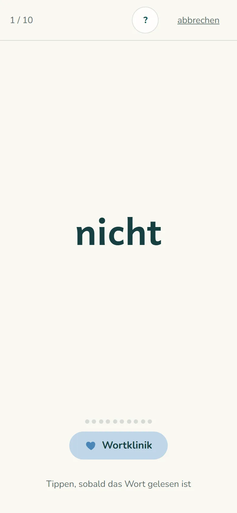
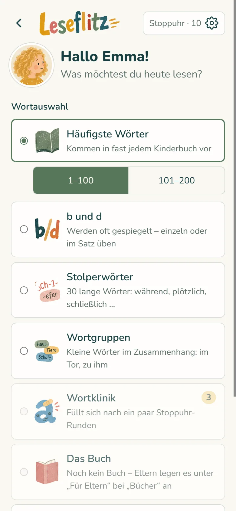
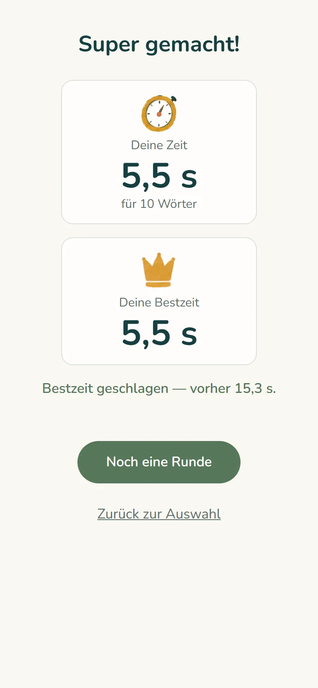
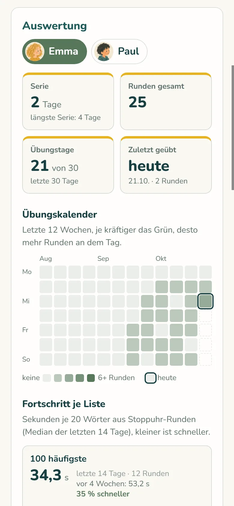

Lese-App für Kinder: flüssig lesen mit fünf Minuten am Tag
Ein Wort erscheint, dein Kind liest es laut vor, du tippst weiter. Wörter, die noch schwerfallen, kommen in die Wortklinik und werden wiederholt, bis sie mehrmals flüssig gelesen sind. So erkennt dein Kind die Wörter, die in Kinderbüchern am häufigsten vorkommen, bald auf einen Blick – und hat den Kopf frei für die Geschichte. Für Kinder von der Vorschule bis zur 4. Klasse.
Bald im App Store und bei Google PlayKostenlos laden · 7 Tage alles testen · danach gratis weiter mit einem Kind – oder Leseflitz komplett für die ganze Familie · keine Werbung
Kostenlos laden · 7 Tage alles testen · danach 6,99 € im Jahr für die ganze Familie – oder gratis weiter mit einem Kind · keine Werbung



So geht’s
- Wörter aussuchenDie häufigsten Wörter aus Kinderbüchern, b und d, Stolperwörter, Wortgruppen – oder Wörter aus dem Buch, das ihr gerade lest.
- Laut lesen, weitertippenEin Wort erscheint, das Kind liest es vor, ein Erwachsener tippt weiter. Am Ende steht die Zeit und die eigene Bestzeit. Im Modus „Blitz“ laufen die Wörter von allein.
- WortklinikWörter, die noch schwerfallen, kommen in die Wortklinik und werden geübt, bis sie viermal hintereinander gut gelesen sind.
- Euer eigenes BuchText einfügen, Leseflitz sucht je Kapitel die schwierigen Wörter heraus. Vor dem Kapitel kurz üben, dann liest sich die Geschichte flüssiger.
Warum das hilft
Solange ein Kind jedes Wort Buchstabe für Buchstabe zusammensetzt, bleibt für die Geschichte kaum Kopf frei. Dabei besteht ein Kinderbuch zu einem großen Teil aus denselben paar hundert Wörtern: und, die, nicht, war, sagte. Wer sie auf einen Blick erkennt, liest leichter, schneller und mit mehr Freude.
b und d sind derselbe Bogen mit Strich, nur gespiegelt. Viele Kinder vertauschen die beiden noch eine ganze Weile – das ist ganz normal. Darum gibt es eine eigene Übung, mit einzelnen Wörtern und in kurzen Sätzen, und eine Eselsbrücke: Beide Daumen hoch!
Tipp: Lieber jeden Tag fünf Minuten als einmal in der Woche eine halbe Stunde.
Für Eltern
- Seht, wie es vorangeht: Übungskalender, Fortschritt je Wortliste und die Wörter, die noch schwerfallen.
- Bis zu 8 Kinder, jedes mit eigenen Bestzeiten und eigener Wortklinik.
- Alle Geräte der Familie sind auf demselben Stand – das zweite Elternteil kommt per Einladungscode dazu.
- Auf Wunsch eine Erinnerung zur Übungszeit, die stellt das Handy selbst, ganz ohne Server.
- Bestzeiten sind ein Spiel mit sich selbst. Mit anderen Kindern wird nichts verglichen.
- Ruhig statt bunt: im Kinderbereich keine Sterne, keine Streaks, keine Sammelfiguren – nur das Wort.
- Die Zeitanzeige lässt sich abschalten, falls sie Druck macht.

Gemacht für Kinder – und für ihre Eltern
- Keine Werbung, kein Tracking, keine Analyse-Dienste.
- Im Kinderbereich keine Kaufhinweise. Freischalten, Einstellungen und Links nach außen liegen hinter einer Elternsperre mit Rechenaufgabe.
- Von Kindern nur Vorname oder Spitzname und ein Bild aus der App, auf Wunsch Klasse und Übungsziel. Kein Geburtsdatum, keine Fotos.
- Eingefügte Buchtexte bleiben auf dem Gerät, gespeichert werden nur die Wortlisten.
- Daten auf Servern in Frankfurt am Main. Konto und alle Daten lassen sich jederzeit in der App löschen.
Was kostet Leseflitz?
Testphase
7 Tage kostenlos
Alles freigeschaltet, für alle Kinder der Familie.
Danach wählt ihr:
Gratis-Version
0 € – dauerhaft
Ein Kind übt mit den 100 häufigsten Wörtern und der Wortklinik. Auswertung und Abgleich zwischen den Geräten sind dabei.
Leseflitz komplett
alles drin
Alle Wortlisten, eigene Bücher, Spiele, bis zu 8 Kinder – für die ganze Familie, auf allen Geräten.
Leseflitz komplett
6,99 € im Jahr
Alle Wortlisten, eigene Bücher, Spiele, bis zu 8 Kinder – für die ganze Familie, auf allen Geräten. Keine weiteren Käufe.
Die Übungsdaten bleiben auch nach der Testphase erhalten und sind nach dem Freischalten sofort wieder da.
Das Abo verlängert sich automatisch um ein Jahr und lässt sich jederzeit im App Store bzw. bei Google Play kündigen. Die Übungsdaten bleiben immer erhalten, auch nach der Testphase oder einer Kündigung.
Häufige Fragen
Ab welchem Alter?
Für Kinder, die die Buchstaben kennen und flüssiger lesen möchten – von der Vorschule bis zur 4. Klasse. Für den Anfang gibt es eine Schrift nur mit Großbuchstaben und mehr Abstand zwischen den Buchstaben.
Was kostet Leseflitz?
Kostenlos laden und 7 Tage alles testen. Danach übt ein Kind dauerhaft gratis mit den 100 häufigsten Wörtern und der Wortklinik – oder ihr schaltet Leseflitz komplett für die ganze Familie frei.
Kostenlos laden und 7 Tage alles testen. Danach kostet das Jahresabo 6,99 € im Jahr für die ganze Familie: bis zu 8 Kinder, alle Geräte, alle Inhalte. Ohne Abo übt ein Kind dauerhaft gratis mit den 100 häufigsten Wörtern und der Wortklinik.
Gibt es weitere Käufe?
Nein. In Leseflitz komplett ist alles enthalten. Freischalten geht nur im Elternbereich der App.
Nein. Im Jahresabo ist alles enthalten. Abschließen geht nur im Elternbereich der App.
Was passiert nach den 7 Tagen?
Die Testphase endet von selbst – ohne Kosten und ohne Kündigung, denn Zahlungsdaten werden dafür nicht abgefragt. Danach übt ein Kind gratis weiter, oder ihr schließt im Elternbereich das Jahresabo ab. Die Übungsdaten bleiben in jedem Fall erhalten.
Wie kündige ich das Abo?
Dort, wo ihr es abgeschlossen habt: auf dem iPhone oder iPad unter Einstellungen → euer Name → Abonnements, auf Android in der Google-Play-App unter Profil → Zahlungen und Abos → Abos. In Leseflitz führt „Für Eltern“ → „Abo verwalten“ direkt dorthin. Nach der Kündigung läuft das Abo bis zum Ende des bezahlten Jahres.
Gilt das Abo auf iPhone und Android?
Ja. Das Abo gehört zu eurem Leseflitz-Konto: Alle Geräte der Familie, die damit angemeldet sind, sind freigeschaltet – auch das Android-Tablet, wenn ihr das Abo auf dem iPhone abgeschlossen habt.
Kann mein Kind allein üben?
Die Leseübung ist für zwei gedacht: Das Kind liest, ein Erwachsener sitzt daneben und tippt. Im Modus „Blitz“ laufen die Wörter von allein, und die Spiele „Wort-Paare“ und „Bild und Wort“ gehen ganz allein.
Können wir Wörter aus unserem Buch üben?
Ja. Den Text einfügen, Leseflitz sucht je Kapitel die schwierigen Wörter heraus – bis zu zwei Bücher. Der Text selbst bleibt auf dem Gerät.
Was ist die Wortklinik?
Wörter, die noch schwerfallen, kommen in die Wortklinik – wenn ihr sie als falsch gelesen markiert oder wenn sie zweimal viel länger gedauert haben als der Rest der Runde. Viermal hintereinander gut gelesen, und sie sind wieder gesund.
Geht es ohne Internet?
Ja, üben geht auch offline. Die Runden werden übertragen, sobald wieder Internet da ist.
Auf welchen Geräten?
iPhone, iPad, Android-Handy und -Tablet. Alle Geräte einer Familie zeigen dieselben Kinder, Bestzeiten und Bücher.
Wie löschen wir unsere Daten?
In der App unter „Für Eltern“ → „Konto löschen“, oder per E-Mail. Alles dazu: Konto und Daten löschen.
Mein Kind liest sehr stockend. Was hilft?
Das ist gerade in der 1. und 2. Klasse sehr verbreitet. Was zu Hause hilft und wann eine Abklärung sinnvoll ist, steht in unserem Ratgeber: Kind liest stockend – was hilft?
Leseflitz laden
Leseflitz kommt bald in den App Store und zu Google Play.
Mit dem Handy scannen – der Code führt direkt zu Leseflitz im App Store bzw. bei Google Play.
Über Leseflitz
Leseflitz ist am Küchentisch entstanden: Ich habe es als Vater für meine drei Kinder gebaut, die damit jeden Tag fünf Minuten üben. Jetzt können es alle Familien nutzen. Mehr über uns
Kontakt
Fragen, Wünsche, Fehler gefunden? Schreib uns an kontakt@leseflitz.de.